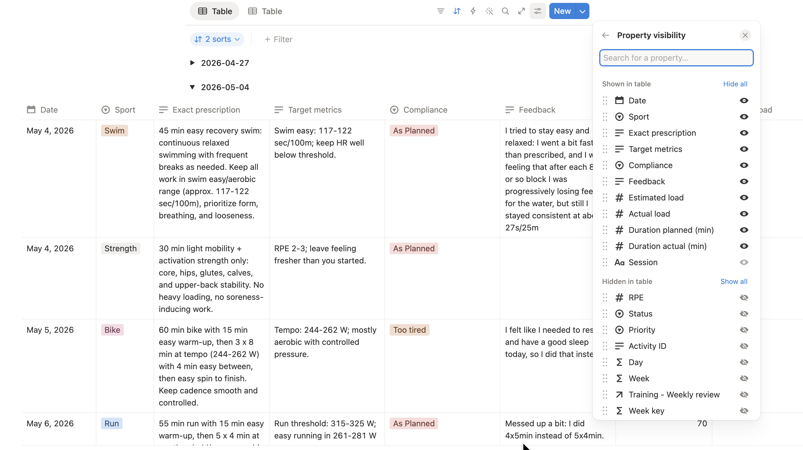

flowchart TD
A["Workouts and activity data"] --> D["Organized weekly workflow"]
B["Availability, races,<br/>profile, and notes"] --> D
D --> E["Weekly review"]
E --> F["Draft next-week plan"]
F --> G["Rule checks"]
G -->|valid| H["Final plan"]
G -->|invalid part only| I["Repair that part"]
I --> F
Why I Ended Up Building an AI Training Assistant
I did not need another generic training plan. I needed a plan that understood that I was trying to qualify again for high-level age-group racing while also having a job, a family.
I am a serious amateur triathlete. I have represented Canada at the Triathlon Age Group World Championship, and I am trying to qualify again for similar events. That usually means one thing: ideally, I should have a coach.
That is the ideal version of reality.
The real version is that triathlon is expensive, photography is also expensive, and a growing family tends to have strong opinions about what counts as a reasonable monthly bill. A recurring coaching fee starts to look less like a performance investment and more like something I would need to explain carefully over dinner.
That is what pushed me toward building my own training-support system.
It was never about proving that software is better than a coach. It is not. It was about building something that could help me train more intelligently inside the constraints of actual life.
The Problem
What I wanted was not just a plan. I wanted a way to:
- track how training was really going
- get a personalized next-week plan
- adapt that plan to my real availability
- stop re-explaining the same constraints to my virtual coach over and over
In other words, I wanted something that could react to the moving parts of my actual training life instead of handing me the same answer every time.
That matters more than it sounds. There is a special kind of frustration in looking at a beautifully structured training week that is completely detached from the week you are actually about to live.
I did not want training to become one more source of background stress. I wanted it to feel sustainable, especially if I was going to keep chasing big goals.
The Path That Led Here
Like a lot of athletes, I started with downloaded plans from the internet. That is a normal first step. They are simple, cheap, and often good enough to make you better.
And to be fair, they do work for a while. But the better you get, the more you notice the gap between a plan that looks good on paper and a plan that fits your life, your fatigue, and your actual goals.
Then I moved to Humango. It worked well enough for a while. In fact, it was great: I qualified for Team Canada in the year I used it. But over time I ran into problems. I wanted something that fit more naturally with my own workflow and had better access to the information I cared about. And after later product changes, some of the features I relied on most, especially around coach interaction and availability-based adjustments, stopped working the way I needed.
So I tried going straight to ChatGPT.
That was fun at first. I was getting nice personalized plans, decent advice, and I could test ideas in real time. Then the honeymoon phase ended. The longer the conversation became, the slower it got. It sometimes confused days. It could forget updated training zones. And I found myself starting too many chats with some version of:
“Today is Thursday, these are my current zones, and no, I cannot do a long ride in the middle of a workday.”
That was the moment I realized the problem was not just “I need AI.” The problem was “I need AI inside a structure I can trust.”
The Idea Behind the New System
The main change was simple: stop asking the model to remember everything, and give it a cleaner job.
Instead of relying on one long conversation, I moved the changing parts of my training life into structured places:
- availability
- races
- athlete profile
- weekly review
- settings such as zones and thresholds
And I moved the stable rules into the system itself:
- do not prescribe sports that I cannot do that day
- do not exceed the maximum number of sessions I can do
- keep weekday sessions inside reasonable limits
- respect the broader training context: build phase and taper phase require very different sessions
That way, the AI is not improvising from memory. It is working from organized information and fixed rules.
That was the real shift. I stopped treating the AI like an all-knowing coach and started treating it like one part of a system.
The Tools I Use
The setup that works for me today is built around three main pieces:
Intervals.icufor training data and activity historyNotionfor organizing availability, races, athlete profile, reviews, and planning contextCodex + ChatGPT/OpenAIfor turning that context into a weekly review and a next-week draft plan
None of these tools is doing everything.
Intervals.icu is where training data lives naturally. Notion gives me a place to keep the moving parts organized. The AI is used for interpretation and drafting, not for pretending it is the entire system.
That division matters more than it sounds.
If you want the more detailed technical version of how this works, I wrote it here.
What the Weekly Workflow Looks Like
At a high level, the process looks like this:
The important part is not the diagram. The important part is the behavior.
The system reviews what happened, drafts what comes next, and checks the draft against reality. If one part is wrong, it fixes it.
The biggest payoff was not that everything suddenly became perfect. It was that the plan stopped feeling detached from my real life. It started feeling more like support and less like one more thing I had to manage manually.
Why That Feels Better Than Plain Chat
This is the biggest difference in day-to-day use: the system feels calmer.
I am no longer hoping the AI remembers what I told it three weeks ago. My zones live in one place. My availability lives in one place. My races live in one place. The weekly plan is built from that context instead of from whatever the conversation happened to remember.
That does not make it magical. It makes it more repeatable.

One Simple Example
Suppose Tuesday is marked as run-only, with one session maximum, and I only have an hour available.
If the AI proposes something silly there, like a 2h ride, the system does not just shrug and call it creativity. It catches the mismatch and asks for that specific session to be repaired, all automatically, without me having to intervene at all.
That is exactly the kind of behavior I wanted.
Example: draft session repair
Wrong prescription
{
"day": "Tuesday",
"sport": "bike",
"duration": "2h",
"notes": "Endurance ride"
}Corrected version
{
"day": "Tuesday",
"sport": "run",
"duration": "45min",
"notes": "Easy aerobic run"
}Tuesday is marked as run-only, with a maximum of one session and roughly one hour available, so the repair step replaces the invalid bike workout with a compliant run session.
Why I Like It
This setup will not be for everyone, but for me it has a few clear advantages.
- it is more personalized than a static plan
- it adapts better to real life than a generic template
- it is more repeatable than re-running the same conversation forever
- it is relatively cost-effective
- it lets me keep using tools I already trust
It also gives me a much better feeling of control. Not total control, because that would be a lie. But enough control that I can trust the workflow.
And for me, that trust is the whole point. A plan only helps if I can actually live with it for months, not just admire it for five minutes.
Final Thoughts
So far, I really like this system.
It gives me a middle ground between generic plans and full human coaching. It helps me keep context organized, adapt training to actual life, and get personalized plans without starting from scratch every week.
That said, I would still tell any athlete the same thing: if you can work with a good human coach, do that.
A coach is still better. A coach brings judgment, motivation, experience, and accountability in a way software does not. And if you are a less experienced athlete, it is much easier to miss bad suggestions when they come from a system that sounds confident.
For me, though, this has been a very useful compromise. It is practical, a bit nerdy, and surprisingly effective.
How It Compares
If I had to summarize the landscape, I would put it like this: pre-made plans are the easiest place to start, Humango sits in the middle as a more adaptive commercial product, plain ChatGPT is flexible but fragile, and this system is the most work upfront but gives me the best balance of structure and adaptability.
| Comparison item | Pre-made plans | Humango | ChatGPT alone | This system |
|---|---|---|---|---|
| Cost | Low | Medium to high | Low to medium | Low to medium |
| Ease of setup | Very easy | Easy | Very easy | Hardest |
| Adaptability | Low | Medium to high | High in theory | High |
| Ease of daily use | Easy | Easy | Medium | Medium |
| Context reliability | High, but static | Medium | Low | High |
| Main advantage | Simple, cheap, predictable | Adaptive and more structured | Flexible and conversational | Flexible, structured, and grounded in real context |
| Main disadvantage | Too generic | Product limits and subscription cost | Memory drift and inconsistent outputs | More effort to build and maintain |
What It Costs
Another reason I like this setup is that it is pretty affordable to run. Intervals.icu is free, though I strongly recommend supporting the project. In my case that works out to less than 50 CAD per year after taxes. Notion is on the free plan. For the OpenAI side, I do not need a ChatGPT subscription at all because I am using the API directly, and the weekly cost has usually been around 5 cents or less.
| Component | What I use | Approximate cost |
|---|---|---|
| Intervals.icu | Supporter tier | < 50 CAD/year |
| Notion | Free plan | 0 |
| OpenAI API | Weekly review + plan generation | about 0.05 CAD/week or less |
| ChatGPT subscription | Not required | 0 |
That affordability matters because it keeps the system in the category of “useful tool” rather than “another recurring expense I need to justify.” That was one of the original goals, and so far it has held up well.